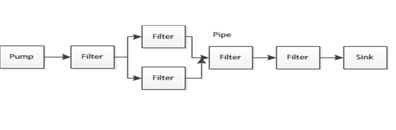
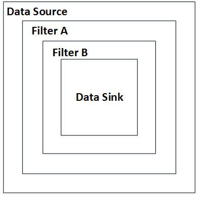

Libraries and supporting examples for use with the Ports and Adapters and CQRS architectural styles for .NET, with support for Task Queues
Once you are using the features of Brighter to act as a command dispatcher and send or publish messages to a target handler, you may want to use its command processor features to handle orthogonal operations.
Common examples of orthogonal operations include:
To handle these orthogonal concerns our command processor uses a pipes and filters architectural style: the filters are where processing occurs, they do not share state with other filters, nor do they know about adjacent filters. The pipe is the connector between the filters in our case this is provided by the IHandleRequests<TRequest> interface which has a method IHandleRequests<TRequest> Successor that allows us to chain filters together.
The sink handler is handler that is the receiver you wish to invoke the action on. The pump is the Command Dispatcher. We occasionally use target handler as a synonym for sink handler
Our pipes and filters approach supports the Russian Doll Model of calling the handler pipeline, a context bag for the pipeline, and support fo generating a request path description out-of-the-box.
The Russian Doll Model is names for the Matryoshka wooden dolls, in which dolls of decreasing sizes are nested one inside another. The importance of this for a pipes and filters pattern style is that each filter in the pipeline is called within the scope of a previous filter in the pipeline.
This is significant because you may desire to act before and after a subsequent filter step. One particular use case is exception handling: a try-catch block that wraps the call to a subsequent step can react to exceptions raised by subsequent steps. This allows us to create policy decisions around exceptions using a library such as Polly and thus support Retry and Circuit Breaker
Our usage of the Russian Doll Model was inspired by FubuMVC
The first step in building a pipeline is to decide that we want an orthogonal operation in our pipeline. Let us assume that we want to do basic request logging.
Because you do not want to write an orthogonal handler for every Command or Event type, these handlers should remain generic types. At runtime the framework will request HandlerFactory creates an instance of the generic type specialized for the type parameter of the Command or Event being passed along the pipeline.
The limitation here is that you can only make assumptions about the type you receive into the pipeline from the constraints on the generic type.
Although it is possible to implement the IHandleRequests interface directly, we recommend deriving your handler from RequestHandler<T>.
Let us assume that we want to log all requests travelling through the pipeline. (We provide this for you in the Paramore.Brighter.CommandProcessor packages so this for illustration only). We could implement a generic handler as follows:
using System;
using Newtonsoft.Json;
using paramore.brighter.commandprocessor.Logging;
namespace paramore.brighter.commandprocessor
{
public class RequestLoggingHandler<TRequest>
: RequestHandler<TRequest> where TRequest : class, IRequest
{
private HandlerTiming _timing;
public override void InitializeFromAttributeParams(
params object[] initializerList
)
{
_timing = (HandlerTiming)initializerList[0];
}
public override TRequest Handle(TRequest command)
{
LogCommand(command);
return base.Handle(command);
}
private void LogCommand(TRequest request)
{
logger.InfoFormat("Logging handler pipeline call. Pipeline timing {0} target, for {1} with values of {2} at: {3}",
_timing.ToString(),
typeof(TRequest),
JsonConvert.SerializeObject(request),
DateTime.UtcNow);
}
}
}
Our Handle method is the method which will be called by the pipeline to service the request. After we log we call return base.Handle(command) to ensure that the next handler in the chain is called. If we failed to do this, the target handler would not be called nor any subsequent handlers in the chain. This call to the next item in the chain is how we support the 'Russian Doll' model - because the next handler is called within the scope of this handler, we can manage when it is called handle exceptions, units of work, etc.
It is worth remembering that handlers may be called after the target handler (in essence you can designate an orthogonal handler as the sink handler when configuring your pipeline). For this reason **all** handlers should remember to call their successor, even **your** target handler.
We now need to tell our pipeline to call this orthogonal handler before our target handler. To do this we use attributes. The code we want to write looks like this:
class GreetingCommandHandler : RequestHandler<GreetingCommand>
{
[RequestLogging(step: 1, timing: HandlerTiming.Before)]
public override GreetingCommand Handle(GreetingCommand command)
{
Console.WriteLine("Hello {0}", command.Name);
return base.Handle(command);
}
}
The RequestLogging Attribute tells the Command Processor to insert a Logging handler into the request handling pipeline before (HandlerTiming.Before) we run the target handler. It tells the Command Processor that we want it to be the first handler to run if we have multiple orthogonal handlers i.e. attributes (step: 1).
We implement the RequestLoggingAttribute by creating our own Attribute class, derived from RequestHandlerAttribute.
public class RequestLoggingAttribute : RequestHandlerAttribute
{
public RequestLoggingAttribute(int step, HandlerTiming timing)
: base(step, timing)
{ }
public override object[] InitializerParams()
{
return new object[] { Timing };
}
public override Type GetHandlerType()
{
return typeof(RequestLoggingHandler<>);
}
}
The most important part of this implementation is the GetHandlerType() method, where we return the type of our handler. At runtime the Command Processor uses reflection to determine what attributes are on the target handler and requests an instance of that type from the user-supplied Handler Factory.
Your Handler Factory needs to respond to requests for instances of a RequestHandler<T> specialized for a concrete type. For example, if You create a RequestLoggingHandler<TRequest> we will ask you for a RequestLoggingHandler<MyCommand> etc. Depending on your implementation of HandlerFactory, you may need to register an implementation for every concrete instance of your handler with your underlying IoC container etc.
Note that as we rely on an user supplied implementation of IAmAHandlerFactory to instantiate Handlers, you can have any dependencies in the constructor of your handler that you can resolve at runtime. In this case we pass in an ILog reference to actually log to.
You may wish to pass parameter from your Attribute to the handler. Attributes can have constructor parameters or public members that you can set when adding the Attribute to a target method. These can only be compile time constants, see the documentation here. After the Command Processor calls your Handler Factory to create an instance of your type it calls the RequestHandler.InitializeFromAttributeParams method on that created type and passes it the object array defined in the RequestHandlerAttribute.InitializerParams. By this approach, you can pass parameters to the handler, for example the Timing parameter is passed to the handler above.
It is worth noting that you are limited when using Attributes to provide constructor values that are compile time constants, you cannot pass dynamic information. To put it another way you are limited to value set at design time not at run time.
In fact, you can use this approach to pass any data to the handler on initialization, not just attribute constructor or property values, but you are constrained to what you can access from the context of the Attribute at run time. it can be tempting to set retrieve global state via the Service Locator pattern at this point. Avoid that temptation as it creates coupling between your Attribute and global state reducing modifiability.
Using an attribute based approach is not an approach favoured by everyone. Some people prefer a more explicit approach to configuring the pipeline.
This is possible, we just don't provide any help out-of-the-box. Although see this issue for a placeholder to fix that.
The trick is to remember that any handler that derives from IHandleRequests<TRequest> has a Successor and you can build a chain by having the first handler call the second handler's Handle() method i.e. Successor.Handle(). You can derive from RequestHandler<T> and call base.Handle() for this, even if you don't want to use the Attribute based pipelines.
In the SubscriberRegistry you just register the first Handler in your pipeline. When we lookup the Handler for the Command in the SubscriberRegistry we will call it's Handle method. It can execute your code, and then call it's Successor (using the Russian Doll approach).
var myCommandHandler = new MyCommandHandler();
var myLoggingHandler = new MyLoggingHandler(log);
myLoggingHandler.Successor = myCommandHandler;
var subscriberRegistry = new SubscriberRegistry();
subscriberRegistry.Register<MyCommand, MyLoggingHandler>();
It is worth noting that as you control the HandlerFactory, you could also register the sink handler, but when instantiating an instance of it on request, build the pipeline of handlers yourself.
We think it is easier to use attributes, but there may be circumstances where that approach does not work, and so this option is supported as well.